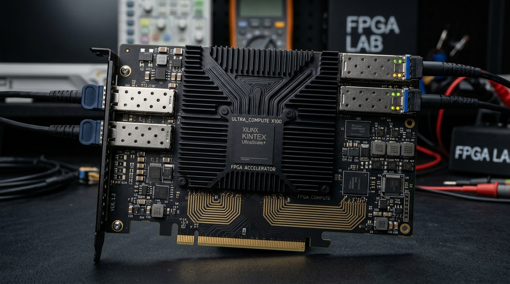

High-Speed Digital & FPGA

UltraCompute X100: Kintex UltraScale+ FPGA Carrier
14-Layer PCIe Gen4 accelerator card with 4x 28Gbps QSFP28 cages and DDR4-3200 memory bus. Engineered for high-throughput algorithmic processing with strict length-matching.
Substrate14-Layer Megtron-6
InterfacePCIe Gen4 x16 / QSFP28
Power Rail0.85V @ 60A Core Rail
Impedance85Ω / 100Ω Diff Pairs